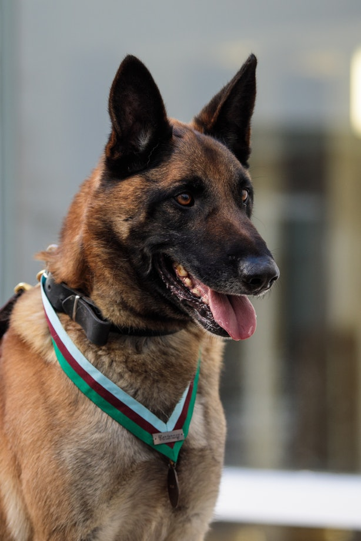

They call them man's best friend for a reason — a good dog will love you unconditionally, while also having your back, even when the enemy in question is nothing more dangerous than the vacuum. Still, friendly and protective dog breeds make great pets not just because, well, they'll protect you, but also because they're often giant cuddlers who love nothing more than playtime with their families.
Many times, a traditional guard dog will fit this particular bill; their deep sense of loyalty makes them very protective of their humans. And a guard dog doesn't have to be very big, either, for you to get all their benefits. Medium and small dogs can be good guard dogs as well, but often owners of smaller dogs make believe that something so small can't do much harm and don't train them properly, which can result in serious injury if the dog feels threatened and lashes out. Just because your dog is on the small side doesn't mean that it stops needing training or security; all dogs need to know who's in charge (you) and what actually represents a threat (not your best friend reaching out a hand for a pat). All states have different legislations about legal dog breeds, and some bigger breeds have restrictions, so do your research thoroughly before you bring that dopey face home.
 Dear Science,Why do we humans love our pets so much? Here's what science has to say: “It really is an amazing question,” said Clive Wynne, director of the Canine Science Collaboratory at Arizona State University. Wynne has devoted his career to studying animal behavior and the evolutionary relationship between animals and people. He said it's easy to see why our pets would love us: “The success of dogs [and other domesticated creatures] on the surface of the Earth is entirely due to the fact that we take some level of care of them.” In fact, some scientists have suggested that pets exhibit a form of parasitism — taking food and shelter from humans without offering much in return. “They argue that we love our pets because they have hoodwinked us into it,” Wynne said. He doesn't buy that argument. (Then again, he is a dog owner — he's under the spell!) But he acknowledged there's no satisfying evolutionary explanation for that warm, gooey feeling we get when we look at our dogs and cats.
[Cats are popular pets, but how much do they like humans?]This love story started with dogs, our most ancient animal companions. Analysis of dog and wolf genomes, along with numerous discoveries of ancient bone, suggests that humans domesticated our canine friends somewhere between 13,000 and 30,000 years ago. Wynne thinks it's likely that the animals started out as wolves that scavenged from human garbage pits; those willing to get closer to people got more food, and they evolved to become tamer over time. Eventually, humans felt comfortable around dogs — and dogs liked being around us — enough that we took them into our homes and recruited them for our hunts. Recent excavations at mammoth kill sites uncovered dog bones among the remains, suggesting that dogs and humans hunted together. But even then, it's not clear that we loved dogs, Wynne said. That change happened around 10,000 years ago, when dogs started showing up in our artwork and burial grounds. Last year, scientists discovered an ancient cemetery near Siberia's Lake Baikal where 5,000- to 8,000-year-old dogs were buried right alongside their humans.